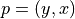
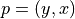
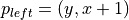
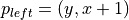
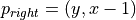
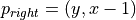
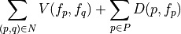
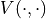
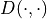

Module lbp.py¶
Loopy Belief Propagation
-
lbp.lbp(data_cost, edge_weights, step=1.0, eta=1.0, iterations=4)[source]¶ Loopy Belief Propagation (LBP) algorithm.
LBP is a dynamic programming algorithm that can be used to find approximate solutions for energy minimization problems over labeling of graphs. In particular, LBP works only with grid-graphs, and this specific implementation works only with graphs representing images; each pixel is a vertex, adjacents pixel are assumed connected by an edge (only in the four cardinal directions, no oblique adjacents).
Parameters: - data_cost: numpy array, type float32
Array with shape [labels, height, width] representing the data cost of the energy funtion.
- edge_weights: list of numpy arrays, type float32
List of four arrays with shape [height, width] representing the weights used by the discontinuity cost.
- The first array contains weights for edges of type
 ,
with  and
,
with  and 
- The second array contains weights for edges of type
 ,
with and
,
with and 
- The third array contains weights of type
 ,
with and 
,
with and  - The fourth array contains weights of type
 ,
with and 
,
with and 
- The first array contains weights for edges of type
Returns: - numpy array, type uint16
Array with shape [height, width] containing the depth-values labels (that is, an integer that can be used to obtain the disparity value) per pixel.
Notes
Given a graph with vertices (pixels) P and edges N, and a set of labels L (with cardinality m), the goal of LBP is to find a labeling of the vertices
 such that
the energy function
such that
the energy function
is minimized. The terms  and  are rispecively names discontinuity cost and data cost. The data cost can be any arbitrary mapping between pixel-label pairs over real values (in this case it is passed as input through data_cost). On the other hand, the discontinuity cost between two pixels p and q is defined as

with
 and
and  positive constants, while
positive constants, while  is
an edge dependent scalar value (stored in edge_weights).
is
an edge dependent scalar value (stored in edge_weights).